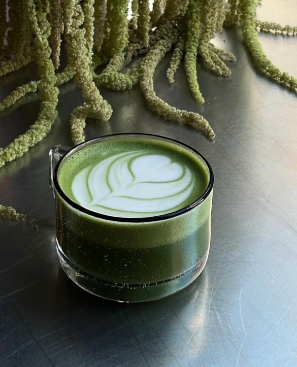

Matcha i København
Har du også svært ved at finde de gode matchacaféer rundt omkring i København?
Find dit lokale matcha-spot

Hvorfor Matcha?
Hvad er Matcha?
Matcha er en speciel form for grøn te, der er kendt for sine mange sundhedsmæssige fordele og sin unikke smag. Den stammer fra Japan og adskiller sig fra almindelig grøn te, fordi den er lavet af finmalede teblade, hvilket betyder, at du indtager hele bladet og dermed får alle næringsstofferne.

Fordele ved Matcha:
- Naturlig energi - Langvarig og stabil energi uden koffein-crash.
- Forbedret fokus - L-theanin hjælper med at holde dig skarp.
- Rig på antioxidanter - Støtter immunforsvaret og cellefornyelse.
- Stofskifteboost - Kan hjælpe med fedtforbrænding.
Lav din egen matcha derhjemme
Bor du ikke tæt på nogle matchaspots? eller arbejder du hjemmefra? Se vores guide til at lave din matcha derhjemme
OpskrifterSe forhandlere på matchapulver af høj kvalitet lokaliseret i København
Forhandlere